REA-Video는 무엇이고 Hypit과 뭐가 다른가요
화제가 된 AI 영상을 따라 만들어 보면 비슷한 느낌조차 잘 안 나요. 영상이 꼽는 이유는 하나예요. 카메라를 어떻게 움직였는지, 인물 구도를 어떻게 맞췄는지 알 길이 없다는 거예요.
그래서 보통은 생성기에 넣는 장면 설명만 고쳐 가며 다시 뽑아요. 아래 화면의 '증기 속 기차역, 어깨 너머로 돌아봄' 같은 문장을 넣고 '다시 뽑기'를 누르는 식이에요. 영상은 이 숫자가 1에서 165, 192까지 올라가는 장면으로 헛수고를 보여 줘요.
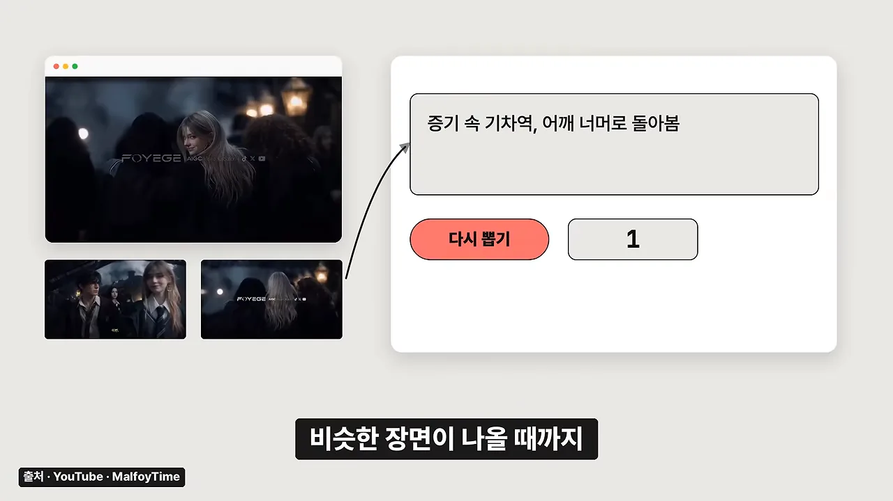
REA-Video는 어떤 도구인가요
REA-Video는 GitHub에 무료로 공개된 오픈 소스 프로그램이에요. Claude Code나 Codex 안에서 바로 돌릴 수 있어요. 아래 화면의 Credits 칸을 보면 출발점이 나와 있어요. 무엇이든 거꾸로 뜯어 원리를 알아내는 리버스 엔지니어링 도구, REA(Reverse Engineer Anything)에서 영감을 받았다고 적혀 있어요. 다른 개발자가 그 아이디어를 가져와 영상용으로 새로 만든 거예요.
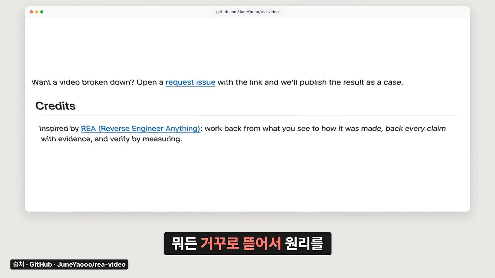
영상에 따르면 저장소는 10월 29일에 처음 생겼고, 보름 남짓 만에 GitHub 별이 9,000개를 넘었어요. 쓰는 법은 간단해요. 유튜브 주소를 Claude Code에 넣으면 Claude Code가 영상을 받아 REA-Video에 넘겨요. 60초짜리 영상을 넣었더니 1분 만에 샷마다 뜯어 복사할 준비를 마쳤어요.
Hypit과는 방향이 반대예요
잘 된 영상을 넣고 따라 만드는 도구로는 Hypit도 있어요. 별이 3만 개 넘게 달렸어요. 아래 화면의 'Why Hypit' 목록에 밑줄 친 줄이 '작업 흐름 하나로 100가지 판 생성'이에요. 명령어 한 번에 100가지 판까지 찍어 내는 게 Hypit이 내세우는 점이에요.
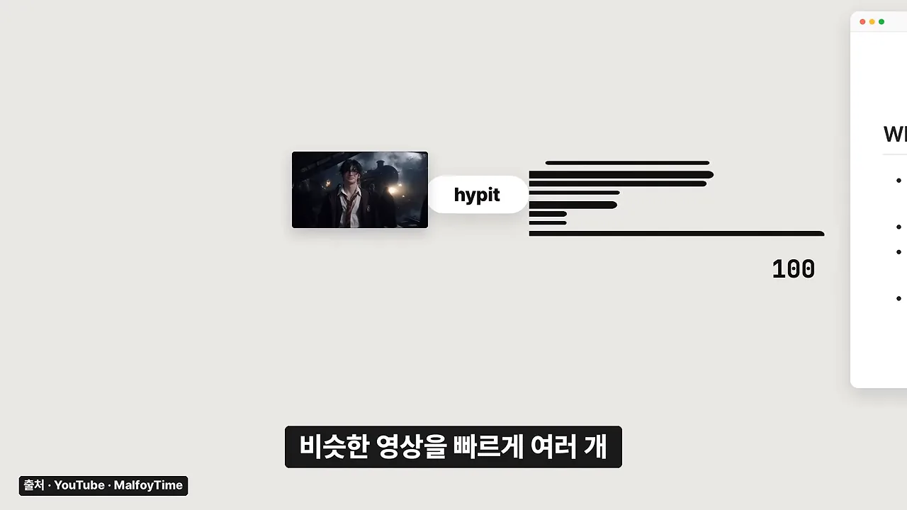
REA-Video는 반대로 영상을 샷마다 뜯어 원본이 어떻게 만들어졌는지부터 뽑아요. 그다음 다시 만드는 계획을 세워 줘요. 아래 표가 그 계획의 종류예요. 왼쪽 두 장면이 이 영상의 예시로, 0~9.6초와 9.6~15초 두 샷 모두 AI로 판정됐어요. 표에서 강조된 AI video 줄에는 '근거, 샷마다 역분석한 프롬프트, 묶어서 생성하는 법과 쓸 모델'을 준다고 적혀 있어요.
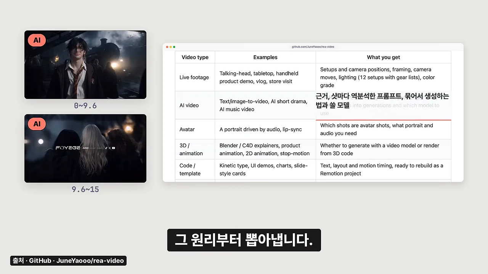
정리하면 Hypit은 바로 찍어 내는 쪽, REA-Video는 어떻게 찍었는지부터 뜯는 쪽이에요. 영상은 이 차이를 갈래 그림으로 보여 줘요. 위 갈래 hypit은 곧장 '바로 찍어내기'와 100으로 가고, 아래 갈래가 REA-Video예요.
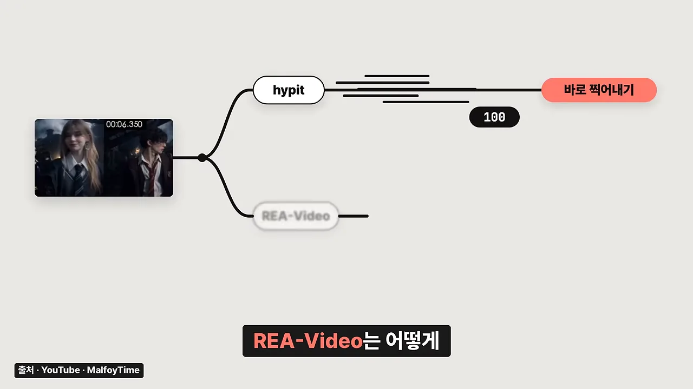
보고서에는 무엇이 나오나요
영상을 넣으면 REA-Video가 샷마다 잘라 그 샷이 어떻게 만들어졌는지 분석해요. 아래는 이 영상의 15초 클립을 넣은 보고서 첫머리예요. 한 줄 요약, '혼합 제작: AI 생성 영상 100%'라는 판정, 16:9 가로 화면에 샷 2개라는 정보가 나와요. 분홍 띠 아래 두 칸이 샷 #1(AI 영상 87%)과 샷 #2(AI 영상 65%)예요.
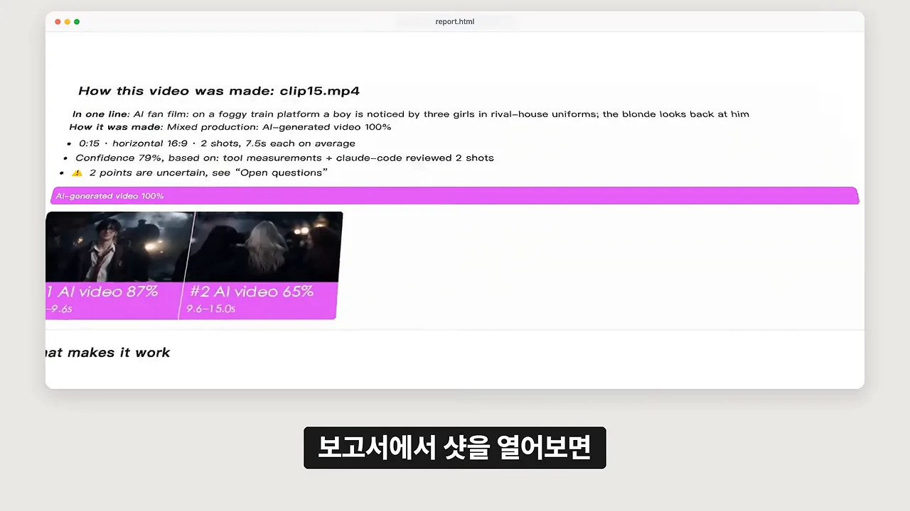
샷을 열면 세세한 부분까지 분석돼 있어요. 왜 이렇게 만들었는지 이유도 함께예요. 카메라가 어떻게 움직였는지, 컷이 어디서 어떤 박자로 넘어가는지 시간대별로 나와요.
자막과 소리까지 따로 정리해요
자막은 '포장 층'이라는 칸에 따로 모여요. 아래 표의 Time, Kind, Style, In / out 열이 각각 나오는 시간, 종류, 글자 색·크기, 들어오고 나가는 방식이에요. 2.50~3.30초의 노란 큰 글자와 13.00~13.10초의 'FOYEGE' 흰 글자 두 줄이 보여요.
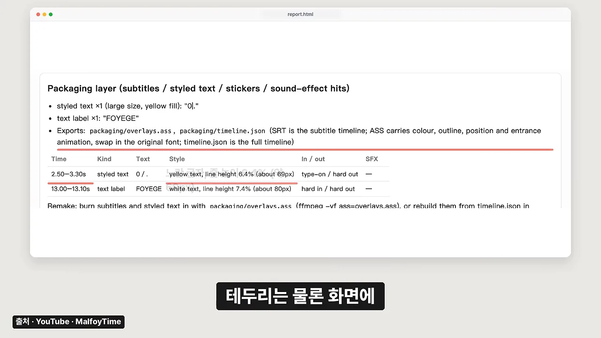
소리도 마찬가지예요. Sound 칸 위쪽 줄그래프가 목소리, 음악, 효과음, 컷이 시간에 따라 어디 들어가는지 보여 줘요. 아래 목록에서 Voice는 '없음 / 거의 없음', Music은 132.5 BPM(Beats Per Minute)으로 나와요.
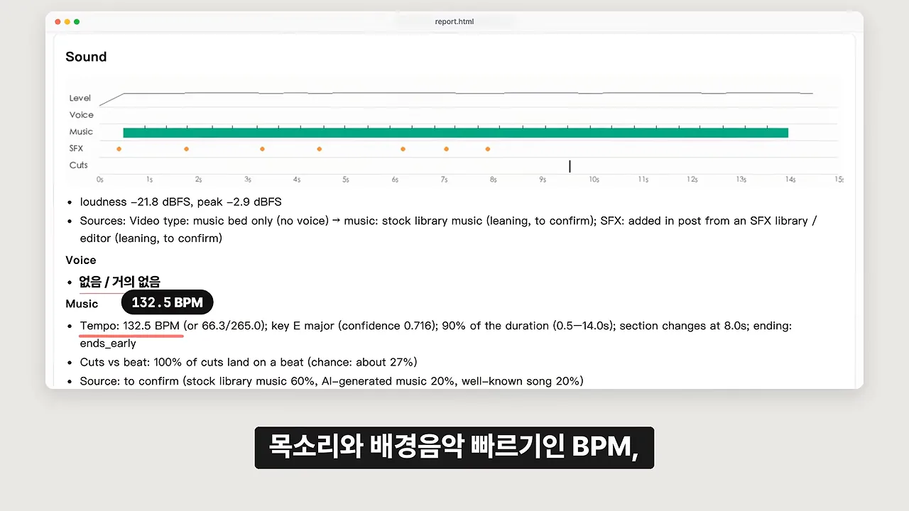
다시 만드는 순서까지 줘요
AI로 만든 샷이면 몇 번에 나눠 생성해야 하는지 알려 줘요. 아래 'Remake it yourself' 목록의 3번이 그 부분이에요. '생성 단위 2개, Seedance 2.5 호출 2회'라고 적혀 있어요. 맨 위 문장은 '그림이 아니라 방법과 리듬을 베끼라'는 뜻이에요.
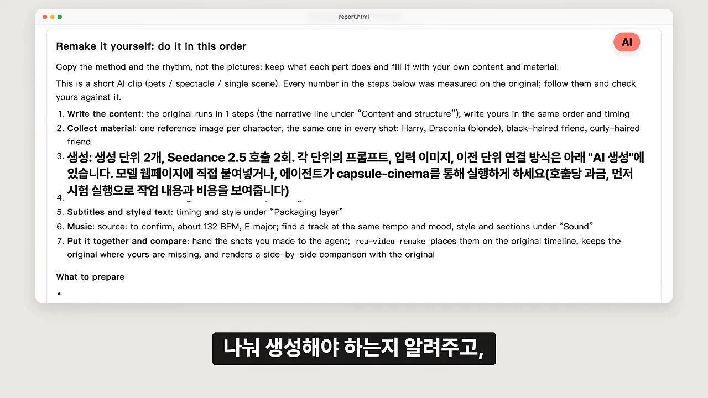
사람용 보고서와 AI용 VIDEO.md
분석 결과는 두 가지로 나와요. 사람이 보는 보고서와 AI가 읽는 VIDEO.md 파일이에요. VIDEO.md는 맨 위 요약의 개요와 지도에서 시작해, 한 줄에 샷 하나씩, 샷마다 파일 하나씩 층층이 내려가요. 아래 Map을 보면 파일마다 경로, 대략의 토큰 수, 무엇이 들었는지가 한 줄씩 적혀 있어요. 맨 위 문장은 '이 페이지를 먼저 읽고, 자세한 건 필요한 파일만 열라'는 안내예요.
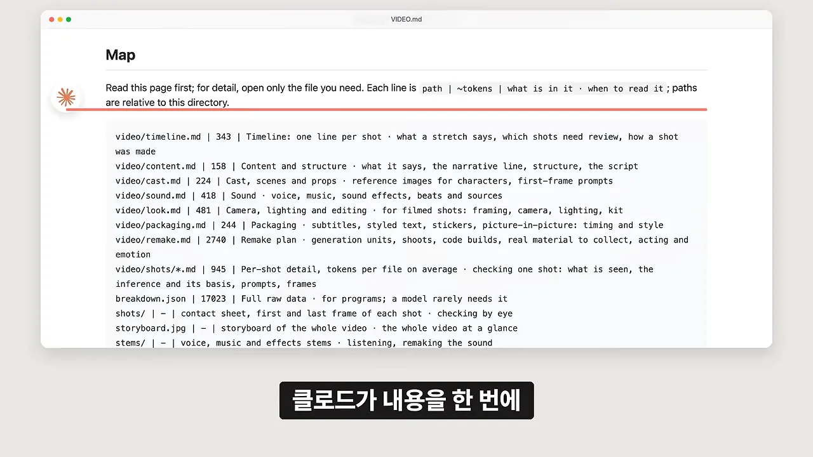
설치는 한 문장이면 돼요
Claude Code에 REA-Video 저장소 주소를 주고 설치해 달라고 한 문장만 보내면 돼요. 아래 화면 맨 위 줄이 그 요청이고, 이어서 저장소를 내려받고 패키지를 설치해요. 그 아래 'INFO' 줄 네 개가 처음 돌릴 때 받는 모델이에요. 오른쪽 위 468MB가 영상이 말한 모델 크기예요.
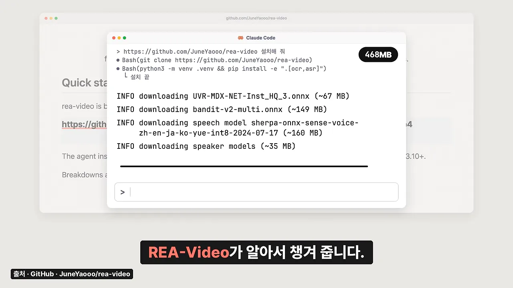
AI 영상 복사: 말포이 팬 영화 15초
첫 번째로 복사한 영상은 11월 5일에 올라와 조회수 189만 회를 넘긴 말포이 AI 팬 영화예요. 14분 54초짜리 영상에서 앞 15초만 골랐어요. 안개 낀 밤 기차 승강장에서 카메라가 뒤로 물러나며 둥근 안경 소년을 따라가요. 교복 입은 여학생 셋이 차례로 지나치며 돌아보거나 웃고, 이어서 금발 여학생이 어깨 너머로 천천히 돌아봐요.
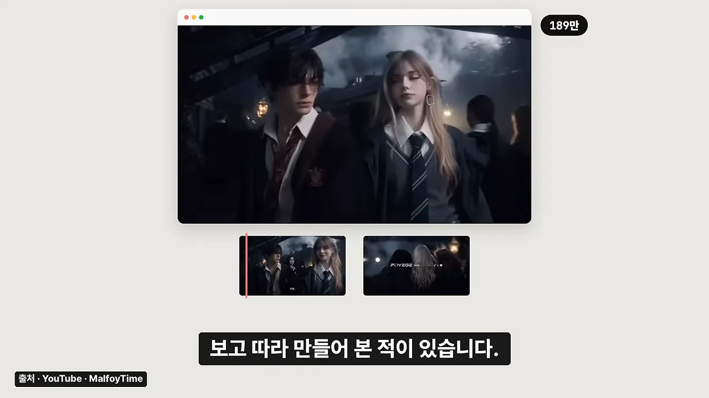
REA-Video가 준 재료
뜯어 보니 15초가 샷 두 개로 나뉘어 있고, 목소리 없이 132.5 BPM 음악만 깔려 있었어요. AI로 만든 영상이라 REA-Video는 다시 만들 재료를 줬어요. 먼저 인물 네 명의 생김새 표예요. 아래 'Cast, scenes and props' 표의 A~D 줄이 해리, 금발의 드라코니아(말포이), 검은 머리 친구, 곱슬머리 친구예요. 생김새와 주연·조연, 나오는 샷이 적혀 있어요.
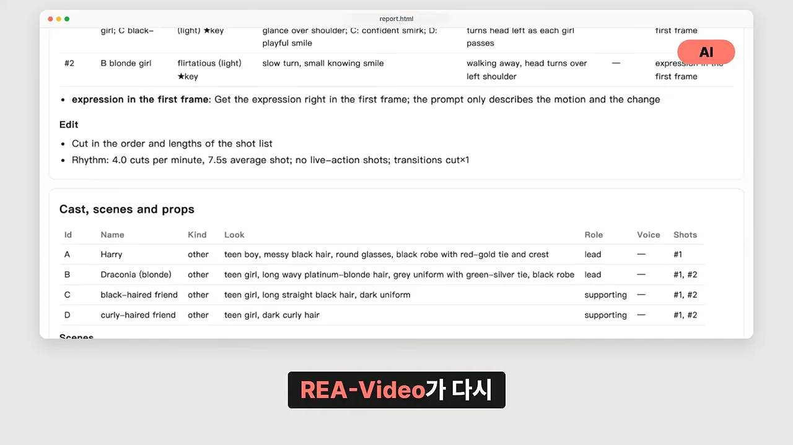
다음은 생성 단위예요. 아래 막대에서 빨간 칸 G1이 0~9.6초, 흰 칸 G2가 나머지 15초까지예요. G2는 G1의 마지막 장면에서 이어 만들어요. 연기표, 조명과 색, Seedance 2.5 프롬프트 규칙도 함께 나왔어요.
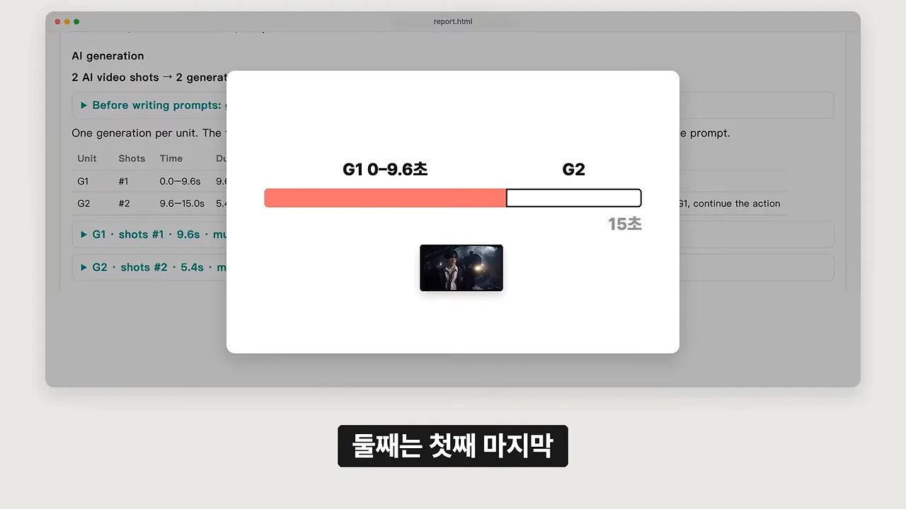
Claude Code 창 하나가 끝까지 맡아요
여기서부터는 Claude Code 창 하나가 영상 만드는 과정 전부를 맡았어요. 사람이 따로 붙여 넣지 않아도 분해 결과를 읽고 다음 일을 해요. 아래가 그때 보낸 지시예요. 1번은 cast와 remake 문서를 읽어 인물 4명과 영상 조각 2개를 정리하라는 거예요. 2번은 원본에서 인물별 정면 얼굴과 상반신 그림을 고르라는 것, 3번은 Higgsfield로 인물 시트를 만들라는 거예요. 맨 아래 줄은 '이번에는 그림만 만들고 영상 생성은 아직 하지 마'예요.
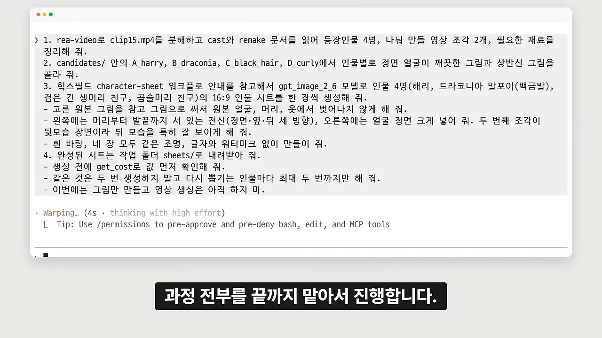
인물 그림은 REA-Video가 주지 않아서 Claude가 Higgsfield로 만들었어요. 해리, 말포이, 친구 둘의 전신·얼굴 2K 시트 네 장이에요. 아래는 말포이 시트예요. 왼쪽에 정면·옆·뒤 전신, 오른쪽에 얼굴을 크게 넣었어요. 말포이는 첫 판의 머리색이 어둡고 표정이 찌푸려 다시 뽑은 거예요.
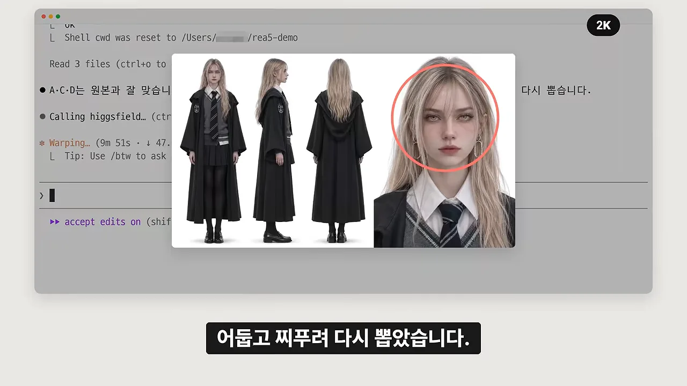
카메라를 고치고, 초안부터 뽑아요
카메라 움직임도 Claude가 새로 맞췄어요. REA-Video는 첫 조각을 고정 카메라로 봤어요. Claude는 그림을 보고 카메라가 뒤로 물러나며 따라가게 고쳤고, 프롬프트 문장도 직접 썼어요. 분석 결과를 그대로 믿지 않고 한 번 더 확인한 셈이에요.
순서는 이랬어요.
- 480p 초안 두 조각을 먼저 만들어요 — Higgsfield의 Seedance 2.5로 10초와 6초짜리를 뽑았어요. 둘째 조각은 첫째의 마지막 장면에서 이어지게 했어요.
- 업스케일을 시험해요 — 피부가 뭉개져서 쓰지 않았어요.
- 1080p로 다시 그려 확정해요
왼쪽 원본과 오른쪽 '우리 판'을 나란히 놓으면 표정, 각도, 구도까지 거의 같아요. 인물 시트부터 1080p까지 약 320 크레딧이 들었어요.
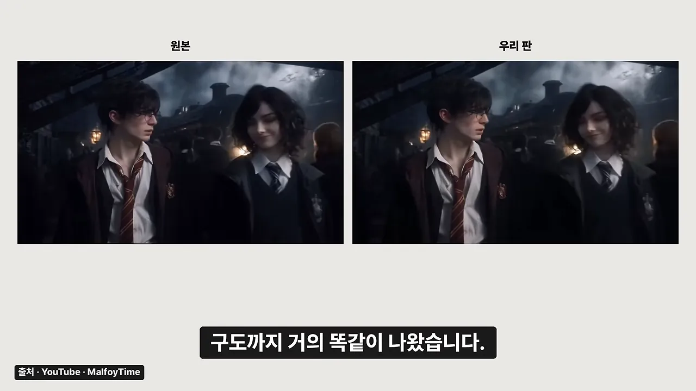
3D 만화 쇼츠 복사: 코드로 다시 짜기
AI로 만든 장면은 분석대로 재료를 채우면 다시 만들 수 있어요. 그런데 3D로 만든 영상은 만든 방식이 다르니 다시 만드는 길도 달라요.
두 번째로 복사한 건 Ricks Clips 채널의 65초 쇼츠 '완벽한 철길은 왜 안 될까'예요. 11월 1일에 올라와 2,900만 회 넘게 봤어요. 붉은 사막 협곡 철길 위에서 납작한 2D 카드 인물들이 3D 세계를 오가며 이야기를 풀어요. 자막은 낱말 하나씩 나오고, 카메라는 레일을 따라 미끄러져요.
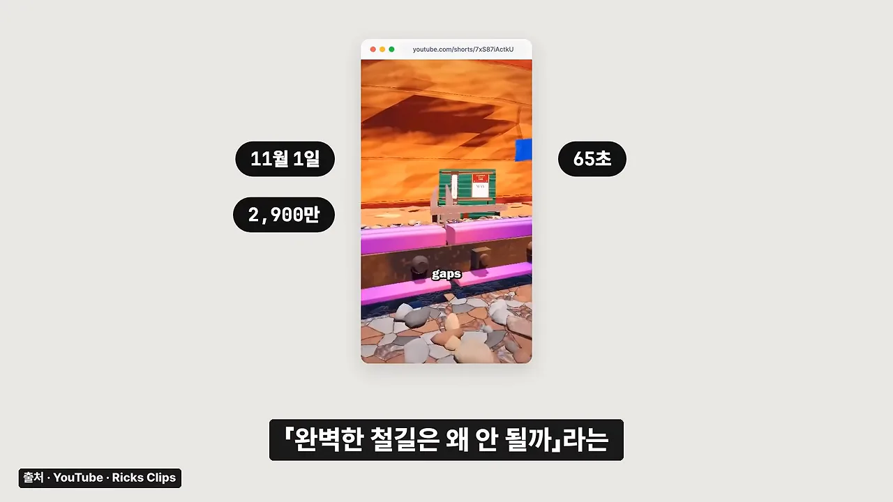
REA-Video는 이 쇼츠에서 샷 15개, 낱말 자막 160개, 레일을 따라가는 카메라 경로와 박자를 뽑았어요. 아래 Edit 칸에 강조된 줄이 박자예요. 분당 12.9컷, 평균 샷 4.34초, 실사 샷은 없어요. 전환은 컷 4번, 디졸브 3번, 와이프 3번 등으로 세어 놨어요. 아래 Transitions 표에는 전환마다 시각과 종류, 길이가 나와요.
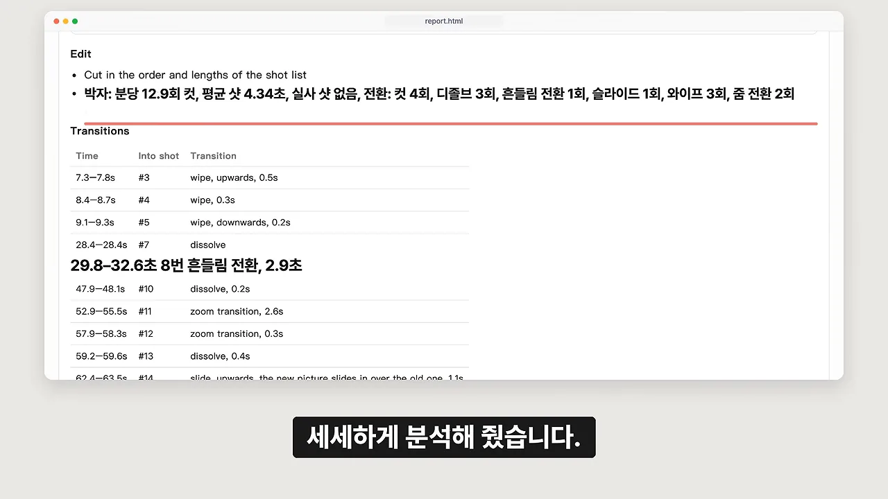
생성기 대신 코드로 짜요
원본도 Claude Code로 만든 3D 만화라서, 영상 생성기 대신 Claude Code로 3D 장면을 코드로 짜는 길을 골랐어요. 틀은 mromidev가 무료로 공개한 claude-animated-shorts예요. three.js와 Remotion으로 3D 세계와 2D 카드 인물을 코드로 그려요.
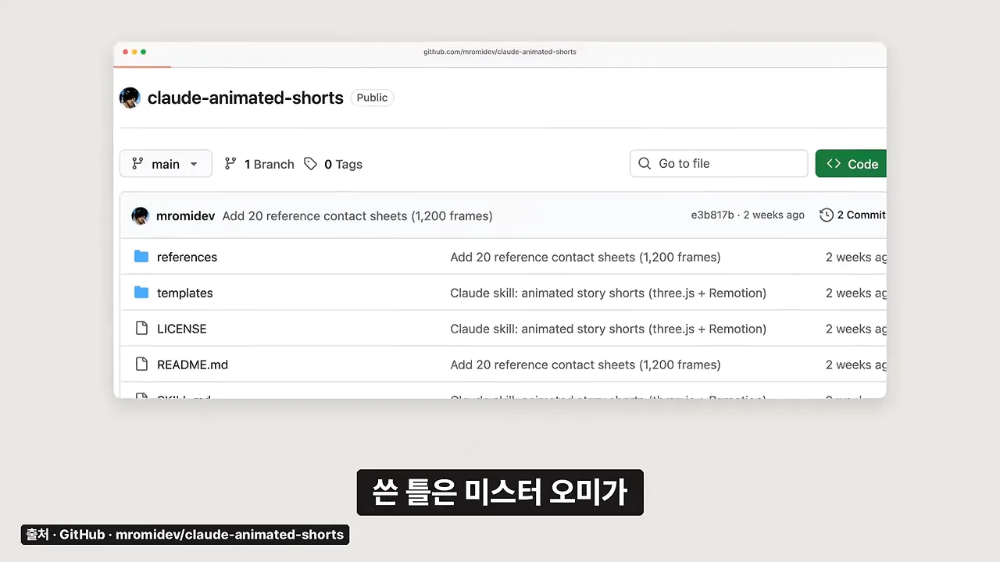
Claude Code 창 하나가 REA-Video의 샷, 카메라, 대사, 효과음 시간표를 읽고 그 틀로 3D 장면을 만들어 나갔어요. 이야기는 바꾸지 않고 원본 그대로 넣었어요. 이음매 없이 완벽하게 깐 철길이 한여름 더위에 늘어나 휘면서 기차가 떨어지는 이야기예요. 아래 터미널은 효과음을 맞추는 단계예요. 원본 소리에서 효과음이 난 지점을 찾아 같은 시각에 넣었고, 오른쪽 아래 '25개'가 맞춘 효과음 수예요.
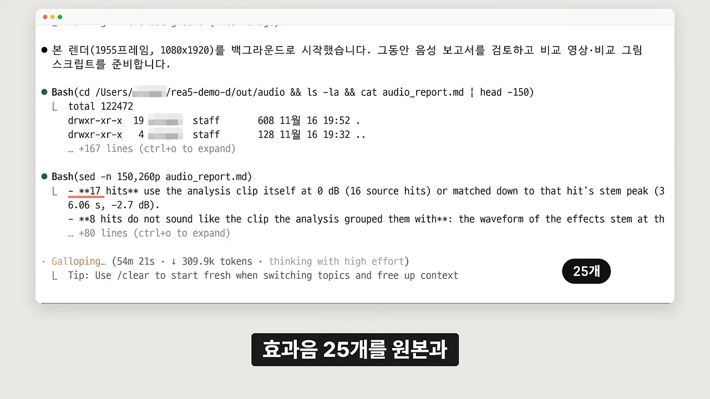
Claude Code 창 하나가 약 1시간 17분 만에 65초 전체를 원본과 같은 길이로 만들었어요. Higgsfield도 영상 생성기도 쓰지 않아서 크레딧은 0이에요. 원본처럼 세로 화면이고, 영어 대사 218단어가 원본과 같아요. 낱말 하나씩 뜨는 자막 178조각도 모두 원본과 같은 순간에 떠요. 분석 단계에서는 낱말 자막을 160개로 셌는데, 두 숫자가 왜 다른지는 영상에서 설명하지 않아요.
왼쪽이 2,900만 회 원본, 오른쪽이 '우리 판'이에요. 동전이 쌓인 철길, 초록 간판, 화면 아래 'and his' 자막의 자리가 거의 같아요.
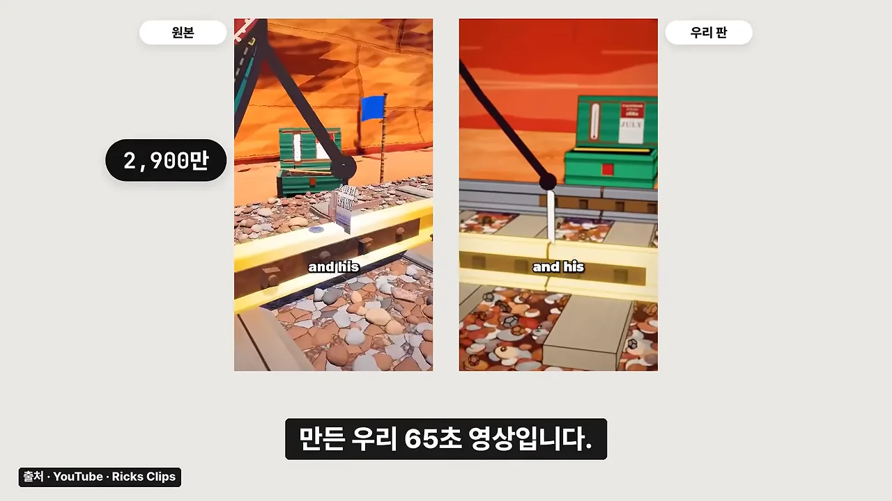
만든 방식을 알면 길이 정해져요
두 편을 복사해 보고 영상이 내린 결론은 이거예요. 원본이 어떻게 만들어졌는지 알면 새로 만드는 길이 정해져요. 먼저 두 실험을 나란히 놓아 볼게요. 숫자는 모두 영상이 밝힌 그대로예요.
| 항목 | 말포이 AI 팬 영화 | 3D 만화 쇼츠 |
|---|---|---|
| 원본 | 14분 54초 중 앞 15초, 조회수 189만 회 | 65초 전체, 조회수 2,900만 회 |
| REA-Video 판정 | AI 생성 영상, 샷 2개, 132.5 BPM 음악 | 3D 만화, 샷 15개, 낱말 자막 160개 |
| 다시 만든 도구 | Higgsfield의 Seedance 2.5 | Claude Code + three.js + Remotion |
| 비용 | 약 320 크레딧 | 크레딧 0 |
| 걸린 시간 | 영상에 나오지 않아요 | 약 1시간 17분 |
영상은 이 생각을 갈래 그림으로 보여 줘요. 왼쪽 AI, 3D, 찍은 것 세 꼬리표에서 선이 나뉘어 위쪽은 '생성', 아래쪽은 '코드'로 가요.
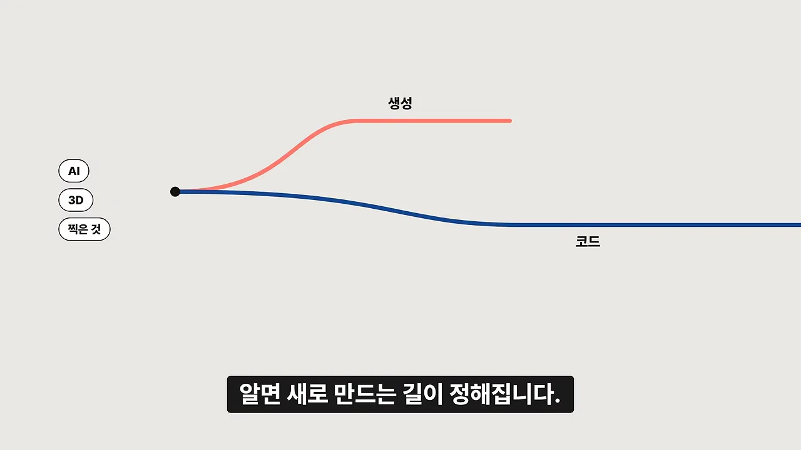
세 갈래를 한 그림에 모으면 이렇게 돼요. 왼쪽이 REA-Video가 내리는 판정, 오른쪽이 영상이 말한 다시 만드는 길이에요.
실제로 찍은 샷에 주는 촬영안은 이런 모습이에요. 아래 보고서의 Shoot 칸에는 조명 배치와 색온도가 적혀 있어요. 강조된 줄은 '설정 클로즈업, 고정 카메라(삼각대 / 거치대 / 책상 위), 샷 #1, 화면 19.29초, 약 21.3초 촬영'이에요. 사람이 나오는 영상도 이 길로 다시 만들면 돼요.
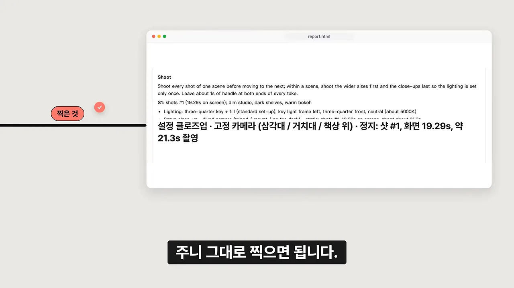
고른 요소만 바꿔 다시 만들기
REA-Video를 만든 개발자는 같은 영상을 네 판으로 바꿔 동시에 튼 결과도 보여 줘요. 아래 화면 위쪽 네 칸이 원본 영상, OiiOii 재현, 개발자 재현, 요소 교체(한푸+서재)예요. 오른쪽 꼬리표 카메라·움직임·속도·전환은 그대로 두고, 고른 요소만 바꾼 거예요.
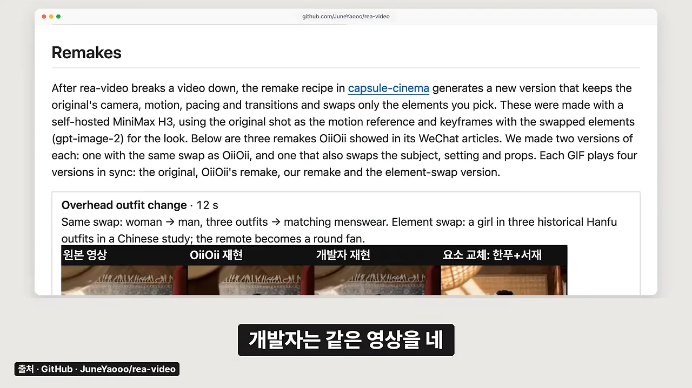
영상 첫머리에 나온 장면도 사실 REA-Video 분석으로 만든 '우리 판' 15초였어요. 아래 화면 왼쪽이 AI 팬 영화, 오른쪽이 3D 쇼츠의 원본과 우리 판이에요. 두 번 다 분석 결과를 바탕으로 작업해 원본과 거의 같게 나왔어요.
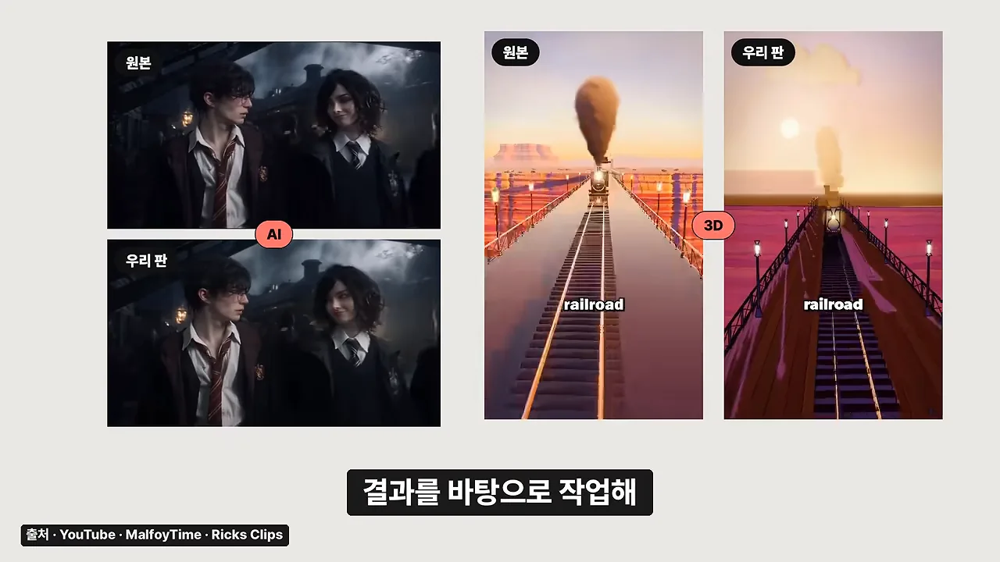
영상의 권유는 간단해요. 따라 만들고 싶던 영상 하나를 골라 REA-Video에 넣고, 어떻게 만들었는지부터 확인해 보라는 거예요.